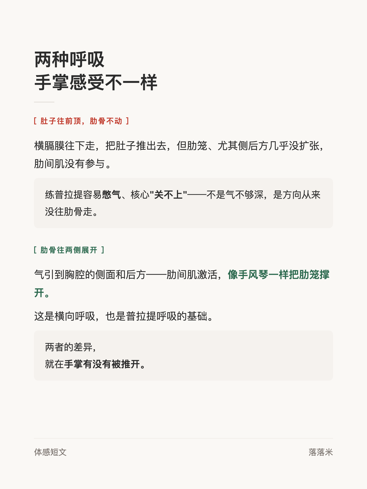
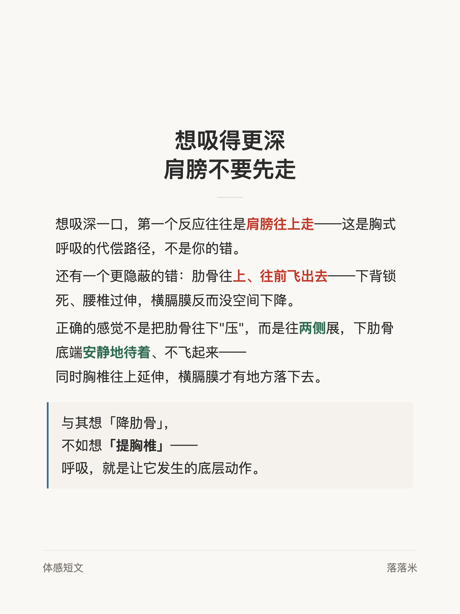

体感短文 #003
呼吸：肋骨往哪走

1 / 3

2 / 3

3 / 3
← 左右滑动浏览全部卡片 →
普拉提的呼吸，气不是吸进肚子的。肚子往前顶、肋骨不动，是横膈膜把腹部推出去，肋间肌没有参与——憋气、核心关不上，多半从这里来。
正解是把气引到胸腔的侧面和后方，肋笼向两侧展开。两种呼吸的差异，把手放在肋骨侧面就能摸到：手掌有没有被推开。
1 / 3

2 / 3

3 / 3
← 左右滑动浏览全部卡片 →
普拉提的呼吸，气不是吸进肚子的。肚子往前顶、肋骨不动，是横膈膜把腹部推出去，肋间肌没有参与——憋气、核心关不上，多半从这里来。
正解是把气引到胸腔的侧面和后方，肋笼向两侧展开。两种呼吸的差异，把手放在肋骨侧面就能摸到：手掌有没有被推开。